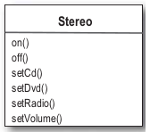

Command
Tenemos que diseñar un control remoto con slots programables (cada uno puede ser asignado a dispositivos) para prender y apagar los diferentes dispositivos, además el control remoto tiene un botón de deshacer (UNDO).
Hay que poder controlar los dispositivos existentes y poder agregar futuros dispositivos.
Miramos el conjunto de clases nos damos cuenta que las clases no implementan un interfaz común, y es probable que los dispositivos que se agreguen sigan con esta característica. Tenemos un control remoto simple con botones de on-off pero el conjunto de clases son muy diversos.
Esperatamos encontrar clases con on-off pero en lugar de eso encontramos métodos como dim(), setTemperature(), setVolumen(), setDirection().
Command
lo que no queremos es que el diseño termine
y que cuando agreguemos algo nuevo no haya que hacer cambios.
Command Pattern nos permite desacoplar los requerimientos del objeto que realmente realiza la acción, en este caso el que hace el requerimiento es el control remoto y el objeto que efectúa la acción es alguna de las clases que nos pasaron.
Introducimos los objetos commando en el diseño.
}
Un objeto command encapsula los requerimientos para hacer algo (prender la luz del living, abrir el portón, etc) en un objeto comando específico que esta asociado a la acción que queremos efectuar (LightOnCommand, GarageDoorOpenCommand).
Entonces guardamos un objeto comando en cada botón del control remoto, y cuando se aprieta el botón este le dice al objeto command que haga la tarea o tareas que tiene asociada.
El control remoto no tiene idea que es lo que se va a hacer, sólo el objeto command es que sabe a quién hay que invocar para hacer la tarea.
El control remoto y el objeto que realmente efectúa la tarea están desacoplados.
Command
Implementando la interface command
Primero de todo, todos los objetos command implementan la misma interface que consiste en un método.
Implementando un objeto command
Miramos el conjunto de clases para prender una luz. La clase Light() tiene 2 métodos on() y off()

Este es un objeto Command así que tiene que implementar la interface Command, lo que lo obliga a implementar el método execute()
El constructor recibe el elemento específico que va a controlar. Este es el elemento que va a recibir el requerimiento.
El método execute() es el que llama al método del objeto receptor, que en este caso el la luz que controlamos.
Command
Usando el Objeto Command
Si tenemos un control remoto con un sólo boton y un slot correspondiente para tener asociado un dispositivo.
Tenemos un sólo slot para guardar el comando
Tenemos un método para guardar el comando en el slot. Esto puede ser llamado múltiples veces si el cliente de este código quiere cambiar el comportamiento de botón del control remoto.
Command
Testeamos el control remoto
La clase esta, que tiene el main RemoteControlTest es nuestra clase cliente.
Command
Testeamos el control remoto
El objeto remote() es el invocador, esta va a contener un objeto command que va a ser usado para efectuar la tarea necearia al momento de ser invocado.
light va a ser el receptor del requerimiento.
creamos el objeto command light le pasamos en el constructor el objeto receptor.
le pasamos el comando al invocador
Apretamos el botón
Patrón Command
Este patrón permite solicitar una operación a un objeto sin conocer realmente el contenido de esta operación, ni el receptor real de la misma. Para ello se encapsula la petición como un objeto, con lo que además se facilita la parametrización de los métodos.
- Clasificación: Es un patrón de diseño de comportamiento de objetos.
- Motivación:
- Encapsula un mensaje como un objeto, con lo que permite gestionar colas o registro de mensaje y deshacer operaciones.
- Soportar restaurar el estado a partir de un momento dado.
- Ofrecer una interfaz común que permita invocar las acciones de forma uniforme y extender el sistema con nuevas acciones de forma más sencilla.
- Aplicabilidad:
- Facilitar la parametrización de las acciones a realizar.
- Independizar el momento de petición del de ejecución.
- Soportar el "deshacer".
- Acciones de recuperación del sistema (métodos adicionales salvar y recuperar en command)
- Interfaz común que permita invocar las acciones de modo uniforme, y extender el sistema con nuevas acciones de forma sencilla.
Patrón Command
- Participantes:
- Command: define la interfaz de ejecución de operaciones
- ConcreteCommand: Implementa la interfaz de ejecución invocando operaciones del receptor. De este modo relaciona una acción con un receptor. El invocador al pide concreteCommannd que se ejecute la acción llamando al método execute() y este lo hace invocando al receiver una o varias veces.
- Client: crea un comando concreto e indica a quién va dirigido (receiver)
- Invoker: contiene el comando asociado a la petición
- Receiver: sabe cómo realizar las operaciones asociadas a una petición. Cualquier clase puede actuar como receptor.
- Consecuencias:
- Desacopla el objeto que invoca la operación del que sabe cómo llevarla a cabo
- Los comandos son entidades de “primer orden”: se pueden manipular y extender como cualquier otro objeto
- Es fácil añadir nuevos comandos ya que no es necesario cambiar las clases existentes
Patrón Command
Asignado los comandos a los slots
Vamos a asignar cada slot a un command en el control remoto, esto hace nuestro control remoto nuestro invoker, cuando el boton es apretado el metodo execute() va a ser llamado en el commando correspondiente (el que fue asignado), lo que resulta en una serie de acciones de acciones o accion.
Vamos a asignar cada slot a un comando en el control remoto. Esto hace que el control remoto sea el invoker. Cuando un boton es apretado execute() va a llamar al comando correspondiente, que resulta en acciones que son invocadas en el receiver (lights, ceiling fans, stereos)
Patrón Command
Asignado los comandos a los slots
El objeto NoCommand con el que llenamos los slots inicialmente es un objeto null.
Este tipo de objetos nos libera de la responsabilidad de manejar los null en el cliente.
En este caso se usa para que cuando un slot este vacio si apretamos el botón no pase nada.
Patrón Command
Implementado los commands
Ya implementamos el command LightOnCommand para el control remoto simple (de un sólo botón), con lo cual lo podemos dejarlo tal cual estaba e implementamos el LightOffCommand.
Tratemos como un stereo que tiene mas funciones

Supongamos que queremos que prenda el CD que esta en la bandeja. Esto requiere una serie de acciones
Patrón Command
Programemos el control remoto
Creamos los dispositivos que reciben de pararámetro la ubicación
Creamos los commands pasandoles el dispositivo correspondiente a cada uno
Patrón Command
Programemos el control remoto
ya tenemos todos los commands, ahora los cargamos en los diferentes slots del control remoto
Tocamos todos los botones, prendemos y apagamos para ver como anda
Patrón Command
UNDO
Vamos a agregar la funcionalidad deshacer al control remoto. Con esto vamos a poder deshacer la ultima accion.
Si tocamos el boton de prender la luz de la cocina si tocamos el undo se debería apagar
Si los commands soportan undo, tienen un metodo undo() que deshacer lo que haga el boton execute()
Agregamos el undo() a la interfaz
Le tenemos que agregar el undo a todos los commands
Por ejemplo en LightOnCommand, si el metodo execute() fue llamado, entonces el metodo on() fue el ultimo llamado, entonces undo() necesita ser el opuesto de on(), osea llamar al metodo off()
LightOffCommand es igual pero al reves, el undo en vez de off() hace on()
Lo que nos falta es que le control remoto guarde el último botón apretado y tenga el boton undo
Patrón Command
UNDO
Creamos una variable de instancia para guardar el ultiomo commando invocado, luego cuando alguien aprieta el boton undo, tomamos el commando guardado en la variable y invocamos al método undo()
Cada vez que apretamos un boton guardamos la referencia en la varible de instacia undoCommand
Cuando apretamos el boton undo llamamos al undo() del command guardado en la varible de instancia undoCommand
Patrón Command
UNDO
Probamos el undo
Patrón Command
Macros
Si queremos apretar un botón y setear las luces, que se prenda el stereo, y la tele, todo apretando un boton.
Lo que vamos a hacer es un command que ejecute otros command
El execute ejecuta todos los comando guardados en el vector
Patrón Command
Macros
Probamos el macro
Creamos los dispositivos, junto con los commands para prender y apagar los dispositivos
El execute() ejecuta todos los comando guardados en el vector
Patrón Command
Macros
Probamos el macro
Creamos dos arrays de Commmnds, uno para el onMacro y otro para el OffMacro y luego creamos los macros pasandole la lista de acciones (comands) que hay que hacer para prender y apagar el macro
asignamos el macro a un boton
Apretamos algunos botones para probar
Patrón Command
Macros
Creamos dos arrays de Commmnds, uno para el onMacro y otro para el OffMacro y luego creamos los macros pasandole la lista de acciones (comands) que hay que hacer para prender y apagar el macro
En general usamos objetos command bobos que sólo invocan la accion en en el receiver, pero se puede hacer que esto no sea así, y que el command sea el que haga todo y no necesite un receiver.
Esto se puede hacer pero acoplamos y el invoker y el receiver, ya no vamos a poder parametrizar los comandos con receivers.
Se podría implementar que el undo funcione no sólo para la última acción. Para soportar esto habria que tener una pila con los comands y cada vez que se aprieta undo, el invocador saca de la pila el command y llama a undo().
Patrón Command
Colas
Command nos da una forma de empaquetar acciones (un receiver y un conjunto de acciones) y pasarlos como un objeto. Una vez que el command fue creado puede pasar bastante tiempo hasta que un cliente lo invoque. Inclusive puede ser invocado por un proceso distinto. Este esenario se puede ver en schedulers (planificaciones), job queues (tareas programadas)
Si tenemos una cola de trabajos y agreagamos commando a la cola, el proceso que toma los trabajos de la cola, toma un command de la cola, lo ejecuta, espera que termine, lo remuve, y luego toma el siguiente.
Notemos que el trabajo de la cola estan totalmente desacoplados de otros objetos que hacen el trabajo. Al trabajo de la cola no le importa que se hace sólo toma los commands e invoca execute().
Mientras lo que pongamos en la cola sea un Command, el proceso va a poder tomar los comandos y ejecutarlos.
Referencias
Head First Design Patterns
←
→
/
#